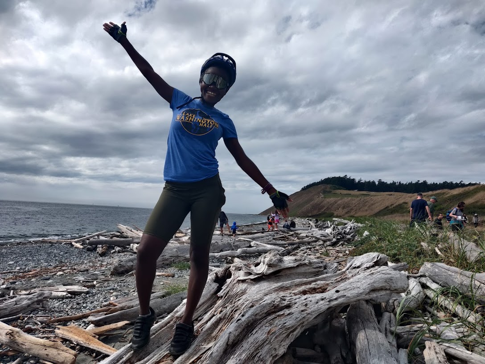
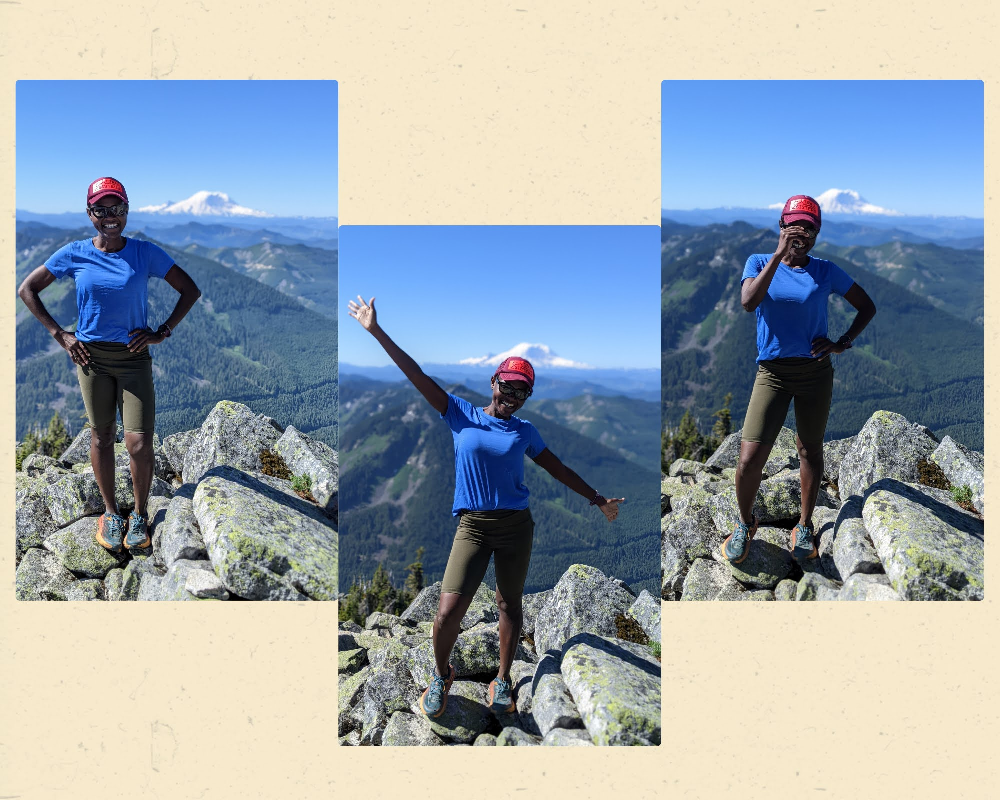

So I’ve been on a personal growth journey on something you’ll least expect me to pursue: posing. As out of character as it sounds I promise there’s a deeper meaning somewhere; please bear with me. This journey was triggered when my mission to keep running fun (a story for another day) was met by the observation that all my trail photos look the same; different backgrounds but airplane arms all over the place.

After some experimeng, I arrived at three poses that are easy, practical and fun. 3 adjectives, 3 poses; there is something about the number 3 and its why I’m writing this article. 3 poses was enough to scratch the itch. I looked around and found lots of other unrelated things come in 3s; triathlons, tridents, the trinity, 3 wise men, 3 wishes, 3 month quarters, Harry Porter’s friend group of 3, 3 primary colors … the list goes on. There is defintely more to the number than meets the eye.
I observed the same pattern when I wrote about fulfillment which came down to 3 pillars: Challenge, Creation and Connection. Eric Partaker’s Venn Diagram in the 3 alarms looks a bit different but it also comes in threes: Health, Wealth and relationships. On a personal level, I’ve subconsiously internalized the number without ever giving it much thought; I do my best when I have 3 priorities. On the work front that’s writing, software and my jewelry business. At work I have 3 projects that have my name on them. Fitness wise, I actively engage in only 3 sports at a time. Sure I have other interests and things that come up, but I commit to only 3 things rain or shine. I suspect you’ll observe a similar pattern in your own life.
Photo by Fahrul Azmi on Unsplash
3 is a good number, some might say a magic number, just enough for an intimate crowd; the sweet spot between challenging and overwhelming; the precise number of phases to have a beginning, middle and end. In 3 I see balance, stability and completeness and it only took a posing challenge to see that 😄. That said, if you’re ever in a dilemma on the right number of anything, this magic number might be just what you’re looking for.
Happy trails!